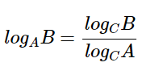
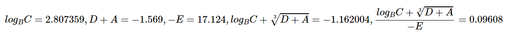
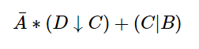
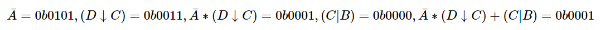
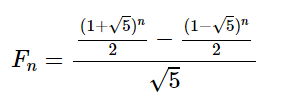
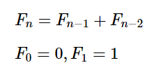

Модуль 1
Содержание
Введение
Теоретическая часть
Немного о STM32
STM32 — семейство 32-битных микроконтроллеров производства STMicroelectronics. Чипы STM32 группируются в серии, в рамках каждой из которых используется одно и то же 32-битное ядро ARM
Каждый микроконтроллер состоит из ядра процессора, статической RAM-памяти, флеш-памяти, отладочного и различных периферийных интерфейсов.
Семейство микроконтроллеров STM32 состоит из 16 серий: F0, F1, F2, F3, F4, F7, L0, L1, L4, L4+, L5, G0, G4, H7, WB, WL
Сама компания STM делит на все серии 4 группы
- Высокопроизводительные - F2, F4, F7, H7
- Широкого применения - F0, G0, F1, F3, G4
- Сверхнизкого потребления - L0, L1, L4, L4+, L5
- Беспроводные - WB, WL
STM32F401VE
В курсе лабораторных работ основным микроконтроллером с которым будем работать будет модель STM32F401VE с ядром CORTEX-M4
Этот микроконтроллер изначально доступен в среде Proteus 8.9, и не требует дополнительной установки каких либо пакетов
Перейдём к рассмотрению технических характеристик. Итого имеем:
Ядро:
- ARM®32-bit Cortex®-M4 CPU with FPU
- ART Accelerator ™, позволяющий выполнять операции с нулевым ожиданием из флэш-памяти
- Частота работы до 84 МГц
- Блок защиты памяти
- Инструкции DSP (digital signal processor)
Память:
- 512 КБайт FLASH памяти
- 96 Кбайт SRAM памяти
Тактиррование, и питание:
- Напряжение портов ввода/вывода от 1.7 V до 3.6 V
-
POR, PDR, PVD и BOR
BOR (Brownout Reset) это блок, который сохраняет состояние сброса микроконтроллера для тех пор, пока напряжение питания не достигнет заданного порогового значения VBOR. VBOR настраивается через Option bytes микроконтроллера. По умолчанию BOR выключен. Пользователь может выбрать от трех до пяти программируемых пороговых значений VBOR.
POR (Power On Reset)/PDR (Power Down Reset), выполняет ту же операцию, что и BOR, но с фиксированным и, настроенным на заводе, пороговым значением напряжения.
Прошивка устройства может активно контролировать электропитание с помощью программируемого детектора напряжения PVD (Programmable Voltage Detector). PVD позволяет настроить напряжение для мониторинга, и если это напряжение VDD выше или ниже заданного уровня, то устанавливается соответствующий бит в регистре управления питанием
- Кварцевый генератор от 4 до 26 МГц
- Генератор 2 кГц для RTC(real time clock) с калибровкой.
Потребляемая мощность:
- В режиме работе: 146 мкА / МГц , при условии, что перефирийные устройства отключены
- В режиме остановки (Flash в режиме остановки, быстрое пробуждение): от 42 до 62 мкА
- В режиме остановки (Flash в режиме глубокого сна, быстрое пробуждение): : от 10 до 30 мкА
- В режиме ожидания: 2,4 мкА (без RTC)
- Питание VBAT для RTC: 1 мкА
1 × 12-битный аналого-цифровой преобразователь 2,4 MSPS: до 16каналов
Универсальный DMA: 16-потоковый DMA с FIFO и пакетной поддержкой. DMA - direct memory access
До 11 таймеров: 6 × 16-битных, 2 × 32-битных таймера до 84 МГц, в каждом до четырех IC(Input Capture) / OC(Output Compare) / PWM или счетчик импульсов и квадратура (инкрементальный) вход энкодера, два watchdog (сторожевых таймера) таймера и таймер SysTick
Режим отладки
- Serial wire debug (SWD) & JTAG interfaces
- Cortex®-M4 Embedded Trace Macrocell™
81 порт ввода/вывода
12 интерфейсов связи
- 3 × I2C
- 3 × USART ( 2 × 10.5 Мбит/с, 1 × 5.25 Мбит/c
- 4 × SPI (42 Мбит/с fCPU = 84 МГц)
- 1 × SDIO
- 1 × SDIO
Устройство расчёта циклического избыточного кода (CRC unit)
96 бит уникального ID
RTC: субсекундная точность, аппаратный календарь
Работа при температуре от –40 to +105 °C
Всё выше перечисленное позволяет применять микроконтроллер STM32F401VE во многих областях:
- Управление моторным приводом
- Медицинское оборудование
- Промышленное применение: программируемые логические контроллеры, инверторы , автоматические выключатели
- Принтеры, сканеры
- Системы сигнализации, видеодомофоны, HVAC (Heating, Ventilation, & Air Conditioning - отопление, вентиляция, кондиционирование)
- Бытовая аудиотехника
- Сенсорный концентратор мобильного телефона
Рисунок 1 структурная схема STM32F401VE

Рисунок 2 выводы STM32F401VE
Практическая часть
В этом разделе познакомимся с созданием и настройкой своего первого проекта на основе ARM микроконтроллера семейства Cortex-M4
Напишем простую программу "Hello World!". Чтобы сделать это необходимо создать 2 части : программную - написать код в STM32CubeIDE, и аппаратную, создать схему в Proteus
Создание и настройка проекта в STM32CubeIDE
Откроем STM32CubeIDE. Выбираем File > New > STM32 Project
Рисунок 3 Создание проекта в STM32CubeIDE
Далее в поле "Part number" вводим STM32F401VE. Кликаем на название в списке и жмём "Next"
Рисунок 4 Выбор модели микроконтроллера в STM32CubeIDE
Вводим имя для проекта и нажимаем "Finish"

Рисунок 5 Название проекта
Включим тактирование. Для этого в правом боковом меню выбираем "RCC". В поле "High Speed Clock" выбираем "Crystal/Ceramic Resonator"
Рисунок 6 настройка тактирования
Сам по себе микроконтроллер не может визуально отображать данные. Чтобы решить эту проблему, будем передавать данные по UART. Однако по умолчанию он выключен в микроконтроллере, поэтому давайте включим его.
В правом левом меню перейдём в раздел "Connectivity". Здесь видим список всего того, что можно подключить к микроконтроллеру. Выбираем "USART1". В поле Mode выбираем "Asynchronous". Также стоит обратить внимание на настройки UART, Видим что по умолчанию Baud Rate установлен 115200. Это количество бит передаваемых микроконтроллером по UART за 1 секунду
Рисунок 7 настройка UART
После того как включили UART на pinout можно увидеть на какие порты назначен UART. Это порты PB6(RX) и PB7(TX). RX - для передачи, TX - для приёма.
Рисунок 8 Pinout
Теперь наш проект настроен. Можно переходить к генерации кода. Да, полностью с нуля писать код для микроконтроллера не нужно, STM32CubeIDE сгенерирует базовый код в соответствии с указанными настройками. Для генерации кода нажимаем кнопку "Build" с изображением молотка 🔨. Далее нажимаем "yes" во всех появляющихся окнах.
Рисунок 9 Генерация кода
Перед тем как начать писать код настроим компиляцию. Для этого перейдём Project > Properties
Рисунок 10 Настройка проекта
В появившемся окне выбираем C/C++ Build > Setting . Далее кликаем на "MCU Post build outputs". Ставим галочку в поле "Convert to Intel Hex file (-O ihex)". Эта опция нужна чтобы генерировать hex файл, который нужен для симуляции в Proteus
Рисунок 11 Настройка проекта
Перейдём непосредственно к написанию кода. Объявим переменную var как массив и запишем в него строку "Hello World!". Чтобы передать данную строку по UART используем библиотечную функцию HAL_UART_Transmit. Она принимает как параметры: модуль uart по которому хотим передавать данные (при настройке был выбран uart1), указатель на буффер данных, размер данных ( в нашем случае 12 это длина строки "Hello World!"), и длительность timeout
Итого необходимо добавить 2 строки в свой код:
uint8_t var[] = {"Hello World!"};
HAL_UART_Transmit(&huart1, &var[0], 12, 100);
Рисунок 12 Написание кода
Скомпилируем проект нажав кнопку "Build" 🔨
Рисунок 13 Компиляция проекта
Если всё было успешно, то в консоли увидите сообщение примерно следующего содержания. В случае каких либо ошибок в консоли, следует исправить их.
Рисунок 14 Сообщение об успешной компиляции
Создание и настройка проекта в Proteus
Откроем Proteus. Кликаем на "Schematic Capture".
Рисунок 15 Создание проекта в Proteus
Нажимаем кнопку "P" и вводим в строку поиска STM32F401VE.
Рисунок 16 Создание проекта в Proteus
Размещаем.
Рисунок 17 STM32F401VE
Уже знаем что микроконтроллер сам по себе не может визуально отобразить данные. Поэтому подключим виртуальный терминал, на который по UART и выведем сообщение. Для этого в боковом меню выбираем virtual terminal
Рисунок 18 Виртуальный терминал
Подключаем вход RX к порту PB6. Именно этот порт был назначен как UART RX порт при создании проекта в STM32CubeIDE
Рисунок 19 Виртуальный терминал
Укажем hex файла для микроуонтроллера, для этого правой кнопкой мыши кликнем по нему и выберем "Edit Properties"
Рисунок 20 Подключение hex файла
В поле "Program File" указывем путь к hex файлу
Рисунок 21 Подключение hex файла
Файл находится по пути куда установили STM32CubeIDE, либо там где указали workspace . Примерно STM32CubeIDE\workspace_1.7.0\Название проекта\Debug

Рисунок 22 Подключение hex файла
Также помним что Baud Rate в настройках был указан как 115200 бит/c, поэтому установим соответствующее значения для виртуального терминала точно также нажав "Edit Properties" и поменяв соответствующее поле
Рисунок 23 Настройка виртуального терминал
Запускаем нажав кнопку ▶
Рисунок 24 Запуск
Иногда виртуальный терминал может не появляться при запуске. Открыть его можно нажав Debug > Virtual Terminal
Рисунок 25 Запуск
Видим сообщение "Hello World!" на виртуальном терминале
Рисунок 26 Hello World
Подведём итоги. В ходе выполнения пункта "Введение" приобрели навыки создания и настройки проекта в средах Proteus и STM32CubeIDE, научились выводить сообщение на виртуальный терминал по UART.
Модуль 1.1. Арифметические операции с целыми беззнаковыми десятичными числами
Задание
Выполнить математическое выражение и вывести результаты на виртуальный терминал
A, B, C, D – целые беззнаковые десятичные числа от 5 до 20.
A > B > C > D
- [4(A+B)-2(C+D)]∗3C2
- (A∗B∗C-4B∗D)2
- [(A−C)3+(B−D)2]∗D
- (A+B−C−D)∗(B−C)3
- [(A−B)∗(B−C)∗(C−D)]2
- A∗B∗D2−(5C−4D)
- [(A−B)3+C+D]∗(C−D)
- (7A−4B)∗C2−5D
- (A−C)∗(B−D)2∗(A−D)+4B
- (A3−5B2)∗(C−D)−D
- [A∗(C−D)+(B−C)2]∗B
- (A−B)∗(C3−4D2)+3C
Аппаратную и программную часть можно использовать из раздела "Введение", либо при желании создать новый проект и попробовать самостоятельно
В разделе "Введение" уже научились выводить. Но как вывести значение переменной?
Для вывода необходимо записать значение переменной в буффер типа char. Потребуется подключить библиотеку stdio.h
#include "stdio.h"
Вывод чисел в формате float отключен по умолчанию, поэтому его надо включить
Рисунок 27 Предупреждение о необходимости вкдчить вывод чисел с плавающей запятой
Нажимаем Project > Properties , выбираем C/C++ Build > Setting, Далее MCU Settings и ставим галочку в поле "use float with pritf from newlib-nano". Жмём "Apply and Close"
Пример вывода чисел в различных форматах. Вывод в бинарном формате не поддерживается по умолчанию, чтобы не усложнять задание предлагается выводить в шестнадцатеричном формате
char buffer[100];
int example1 = 100;
float example2 = 100.12345;
int example3 = 0xA;
int example4 = 0b1010;
HAL_UART_Transmit(&huart1, (uint8_t*)buffer, sprintf(buffer, "integer %d\n\r", example1), 100);
HAL_UART_Transmit(&huart1, (uint8_t*)buffer, sprintf(buffer, "float %f\n\r", example2), 100);
HAL_UART_Transmit(&huart1, (uint8_t*)buffer, sprintf(buffer, "hex example 1 %x\n\r", example3), 100);
HAL_UART_Transmit(&huart1, (uint8_t*)buffer, sprintf(buffer, "hex example 2 %x\n\r", example4), 100);
Рисунок 28 Результаты вывода чисел в различных форматах
Теперь можно перейти к выполнению задания.
Рассмотрим пример: A = 10, B = 15, C = 17, D = 18
Найти значение выражения (A3∗(D-(C+B)4)
Для выполнения математических операций может потребоваться библиотека Math
#include "math.h"
В этом задании будет полезна функция pow(a,b) , которая возводит число a в степень b
Вернёмся к примеру. Объявим переменные A,B,C,D. Далее создадим переменную result в которую запишем результат выражения.
char buffer[100];
int A = 10;
int B = 15;
int C = 17;
int D = 18;
int result = pow(A,3)*(D-pow(C+B,4));
HAL_UART_Transmit(&huart1, (uint8_t*)buffer, sprintf(buffer, "%d\n\r", result), 100);
Рисунок 29 Результаты расчёта математического выражения
Давайте проверим: A3 = 103 = 1000, (C+B)4 = (17+15)4 = 324 = 1 048 576, D - (C+B)4 = 18 - 1 048 576 = -1 048 558, (A3∗(D-(C+B)4) = 1000 ∗ (-1 048 558) = -1 048 558 000
Как видим полученный результат совпал с результатом посчитанным микроконтроллером
Модуль 1.2. Арифметические операции с рациональными десятичными числами
Задание
Выполнить математическое выражение и вывести результаты на виртуальный терминал
A, B, C, D, E – рациональные десятичные числа от -20 до +20.
A >
B > C > 0; 0 > D > E (модуль E > модуля D)
Полезными будут следующие функции библиотеки Math
sqrt(a) - возвращает квадратный корень числа a
cbrt(a) - возвращает кубический корень числа a
sin(a), cos(a), tan(a) - возвращают синус, косинус и тангенс соответственно
log(a), log10(a) - возвращает натуральный и десятичный логарифмы соответственно
Чтобы вывести логарифм с определённым основание воспользуемся формулой замены основания логарифма
Напишем простую функцию для получения логарифма с нужным основанием
double logN(double base, double x) {
return (double)(log(x) / log(base));
}
Итого если хотим получить логаримф с нужным основанием просто используем написанную функцию
logN(a,b)
Рассмотрим пример. Пусть A = -10.43, B = -2.00325, C = 7.032, D =
11.999, E = 17.124
Рассчитаем выражение:
char buffer[100];
float A = 10.43;
float B = 2.00325;
float C = 7.032;
float D = -11.999;
float E = -17.124;
float result = (logN(B,C)+cbrt(pow(D,4)-A/3))/(10*E);
HAL_UART_Transmit(&huart1, (uint8_t*)buffer, sprintf(buffer, "%f\n\r", result), 100);
Рисунок 30 Результаты расчёта математического выражения
Выполним проверку
Результат очень близок, разница из-за погрешности вычислений
Модуль 1.3. Логические операции
Задание
Выполнить логическое выражение и вывести результаты на виртуальный терминал
A, B, C, D – четырёхразрядные двоичные логические переменные от 0000 до 1111.
Обозначение операций
- ⊕ - исключающее ИЛИ (суммирование по модулю 2 )
- ≡ - функция равнозначности (инверсия от исключающего ИЛИ)
- | - штрих Шеффера (И-НЕ)
- ↓ – стрелка Пирса (ИЛИ-НЕ)
Ниже приведены логические операторы, с помощью которых можно реализовать операции
A & B - логическое И
A | B - логическое ИЛИ
~A - логическое отрицание
A ^ B - исключающее или
Остальные логические операции можно реализовать с помощью приведенных выше, просто создав функцию
int NAND(int a, int b) {
return ~(a&b);
}
int NOR(int a, int b) {
return ~(a|b);
}
Рассмотрим пример. A = 0b1010; B = 0b1011; C = 0b1100; D = 0b1101, реализуем выражение:

char buffer[100];
int A = 0b1010;
int B = 0b1011;
int C = 0b1100;
int D = 0b1101;
HAL_UART_Transmit(&huart1, (uint8_t*)buffer, sprintf(buffer, "%x\n\r",((~A&NAND(D,C))|NOR(C,B))&0xF), 100);
Рисунок 31 Результаты расчёта логического выражения
Выполним проверку
Как видим полученный результат идентичен результату который посчитан на микроконтроллере
Модуль 1.4. Запись в память
Задание 1.4.1
Записать в память своё имя и фамилию с помощью ASCII кодов, начиная с адреса, соответствующего трём последним цифрам номера телефона. Запись сделать в flash память, не раньше ячейки 08002000
Чтобы записать в flash память её надо разблокировать командой HAL_FLASH_Unlock(), запись в память осуществляется командой HAL_FLASH_Program
В приведенном ниже фрагменте программы в память записывается слово "MY NAME"
HAL_FLASH_Unlock();
uint8_t wrBuf[7] = {77, 89, 32, 78, 65, 77, 69 };
uint32_t flashAddress = 0x08002000;
for(uint32_t i=0; i<7; i++)
{
HAL_FLASH_Program(FLASH_TYPEPROGRAM_BYTE, flashAddress, ((uint8_t *)wrBuf)[i]);
flashAddress++;
}
HAL_FLASH_Lock();
Чтобы посмотреть результат записи, в Proteus нажимаем Debug > CM4 > FLASH at 0x08000000
Рисунок 32 Открытие окна просмотра памяти
Далее либо проматываем скроллом до нужной ячейки, либо кликаем правой кнопкой мыши выбираем "Go to" и вводим нужный адрес
Посмотрим слово записанное тестовой программой
Рисунок 33 Записанное слово в памяти
Как видим в памяти записано слово "MY NAME"
Задание 1.4.2
Теперь усложним задачу. Необходимо написать функцию, которая вычисляет числа Фибоначчи до 30. Для удобства просмотра в памяти можно сделать запись через 17 ячеек.
Для чётных вариантов сделать вычисление числа Фибоначчи по формуле Бине, для нечётных реализовать линейный алгоритм нахождения
* Задание повышенной сложности: реализовать вычисление числа Фибоначчи матричным способом
Формула Бине:
Линейный алгоритм
Функцию для вычисления числа Фибоначчи реализовать самостоятельно
Возможно при решении данной задачи, может быть непонятно почему ответ после 15 числа получается неверный. Ответ прост: одна ячейка памяти равна байту, число записывается в память начиная с младшего байта
Для лучшего понимания рассмотрим пример ниже
HAL_FLASH_Program(FLASH_TYPEPROGRAM_WORD, flashAddress, 0x78563412);
Как видим из кода в память записывается число 0x78563412
Рисунок 34 Запись в память 32х разрядного числа
Сначала записался младший байт - 12, далее следующий по старшинству - 34, далее 56 и в конце 78, в итоге видим 12345678
Перейдём к заданию, итоговый результат представлен на рисунке ниже
Рисунок 35 Запись в память чисел Фибоначчи